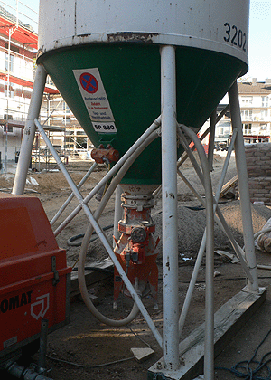

Aufstellen von Silos
Beim Aufstellen von Silos müssen u. a. die
Aufstellungshinweise des Herstellers beachtet,
Sicherheitsabstände zu Baugruben und Bauböschungen eingehalten
,
Stützfüße auf tragfähigem Untergrund aufgestellt und gegebenenfalls lastverteilende Unterlagen verwendet werden.